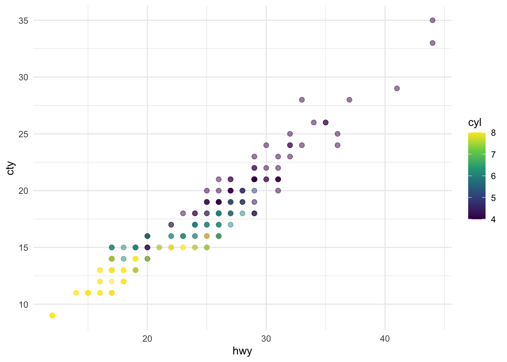
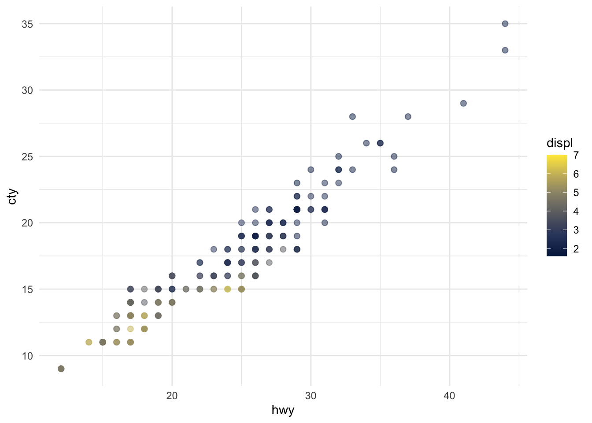

There are 234 observations in our data.
The average city mileage of the cars in our data is 16.86 and the average highway mileage is 23.44.
The plots in Figure Figure 1 show the relationship between city and highway mileage for 38 popular models of cars. In Figure Figure 1 (a) the points are colored by the number of cylinders while in Figure Figure 1 (b) the points are colored by engine displacement.
Show the code

